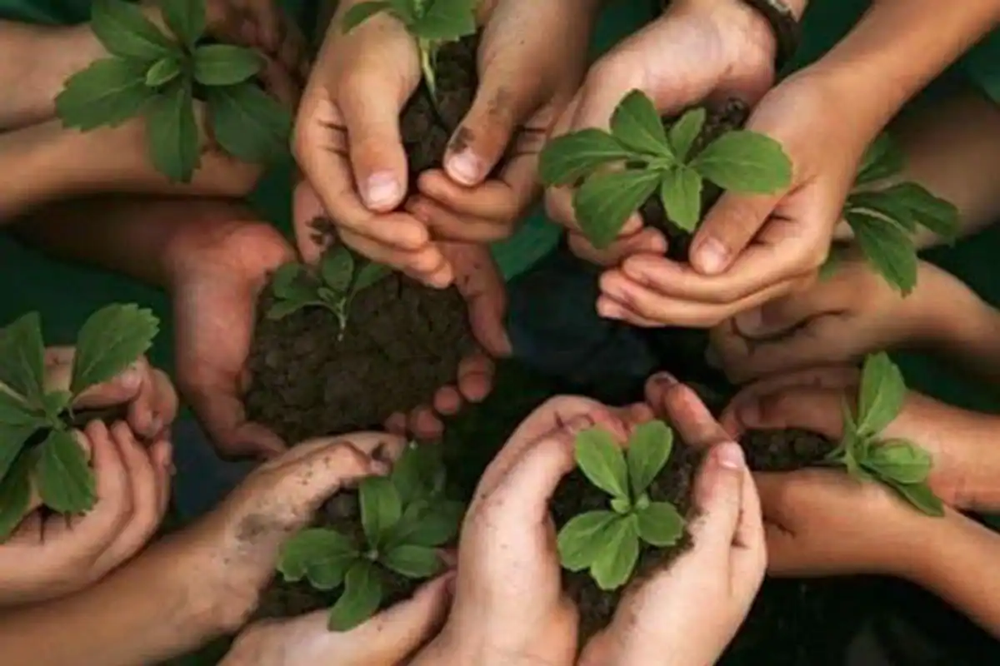

Biography
Keeping your environment clean is one of the prerequisites for leading a healthy and happy life! Greetings! I'm Andrew Lokitambaa, an environmental justice advocate passionate about fostering positive change in marginalized communities. Growing up in the vibrant landscapes of Samburu County, Kenya, I developed a profound connection to nature and a deep-seated commitment to protecting it. My journey as an environmentalist has been shaped by a blend of academic pursuits, grassroots activism, and a relentless drive to empower those on the frontlines of environmental injustice.
Mission
My mission is clear: to champion environmental justice by empowering marginalized communities, promoting sustainable practices, and advocating for inclusive policies that prioritize the well-being of both people and the planet. At the heart of my work lies a steadfast commitment to equity, justice, and the belief that every individual deserves access to clean air, water, and a healthy environment.
Vision for Change
I envision a world where environmental justice is not just a buzzword but a lived reality for all. A world where communities have a voice in decisions that impact their environment, where environmental policies are rooted in equity and fairness, and where future generations inherit a planet that is thriving and resilient.
Values:
Inclusivity
My understanding of environmental justice has been profoundly shaped by my experiences growing up in Samburu County, Kenya. Witnessing the disproportionate impacts of environmental degradation on marginalized communities firsthand, I came to realize the interconnectedness of environmental and social justice issues. From water scarcity and land degradation to the unequal distribution of resources, these challenges underscored the urgent need for systemic change that prioritizes the voices and well-being of those most affected.
Fairness
Fairness is a guiding principle that underpins all my environmental justice efforts. I advocate for systems and policies that prioritize fairness, ensuring that the benefits and burdens of environmental actions are distributed equitably across communities. By addressing historical injustices and centering fairness in our approach to environmental stewardship, we can create a more just and resilient future for all.
Community Empowerment
At the heart of my work lies a deep commitment to community empowerment. I believe that sustainable change must be driven from within communities, with residents leading the charge in identifying their needs, aspirations, and solutions. By empowering communities with the knowledge, resources, and support they need to advocate for their rights and shape their own futures, we can cultivate a culture of resilience and self-determination that transcends generations.
Personal Insights
Why is waste management important? Unlike hundreds of years ago, most of our waste increasingly belongs in the biodegradable category. This means simple waste management techniques such as burying and burning aren’t as effective any more. Here’s a few reasons why waste management is very important today… Waste management can be profitable Recycling and waste management can lead to bigger profits for companies – especially in the food industry. Simply by planning and portioning ingredients, as well as keeping an efficient supply chain, companies such as restaurants, supermarkets and food factories can boost profits by as much as 10%. This also applies to other industries such as construction – where tightening up stock control can save on waste and increase profits.
Through my work as an environmentalist, I've had the privilege of engaging with communities across diverse landscapes, each with its own unique environmental challenges and resilience. These experiences have reinforced my belief in the transformative power of community-led solutions and the importance of centering equity and justice in all aspects of environmental advocacy.